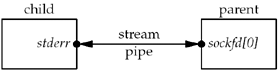
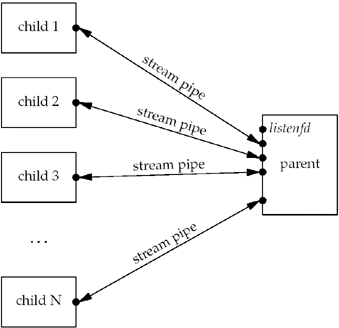

| [ Team LiB ] |
|
30.9 TCP Preforked Server, Descriptor PassingThe final modification to our preforked server is to have only the parent call accept and then "pass" the connected socket to one child. This gets around the possible need for locking around the call to accept in all the children, but requires some form of descriptor passing from the parent to the children. This technique also complicates the code somewhat because the parent must keep track of which children are busy and which are free to pass a new socket to a free child. Figure 30.19 my_lock_wait and my_lock_release functions using Pthread locking.server/lock_pthread.c
17 void
18 my_lock_wait()
19 {
20 Pthread_mutex_lock(mptr);
21 }
22 void
23 my_lock_release()
24 {
25 Pthread_mutex_unlock(mptr);
26 }
In the previous preforked examples, the process never cared which child received a client connection. The OS handled this detail, giving one of the children the first call to accept, or giving one of the children the file lock or the mutex lock. The first two columns of Figure 30.2 also show that the OS that we are measuring does this in a fair, round-robin fashion. With this example, we need to maintain a structure of information about each child. We show our child.h header that defines our Child structure in Figure 30.20. Figure 30.20 Child structure.server/child.h
1 typedef struct {
2 pid_t child_pid; /* process ID */
3 int child_pipefd; /* parent's stream pipe to/from child */
4 int child_status; /* 0 = ready */
5 long child_count; /* # connections handled */
6 } Child;
7 Child *cptr; /* array of Child structures; calloc'ed */
We store the child's PID, the parent's stream pipe descriptor that is connected to the child, the child's status, and a count of the number of clients the child has handled. We will print this counter in our SIGINT handler to see the distribution of the client requests among the children. Let us first look at the child_make function, which we show in Figure 30.21. We create a stream pipe, a Unix domain stream socket (Chapter 15), before calling fork. After the child is created, the parent closes one descriptor (sockfd[1]) and the child closes the other descriptor (sockfd[0]). Furthermore, the child duplicates its end of the stream pipe (sockfd[1]) onto standard error, so that each child just reads and writes to standard error to communicate with the parent. This gives us the arrangement shown in Figure 30.22. Figure 30.21 child_make function descriptor passing preforked server.server/child05.c
1 #include "unp.h"
2 #include "child.h"
3 pid_t
4 child_make(int i, int listenfd, int addrlen)
5 {
6 int sockfd[2];
7 pid_t pid;
8 void child_main(int, int, int);
9 Socketpair(AF_LOCAL, SOCK_STREAM, 0, sockfd);
10 if ( (pid = Fork()) > 0) {
11 Close(sockfd[1]);
12 cptr[i].child_pid = pid;
13 cptr[i].child_pipefd = sockfd[0];
14 cptr[i].child_status = 0;
15 return (pid); /* parent */
16 }
17 Dup2(sockfd[1], STDERR_FILENO); /* child's stream pipe to parent */
18 Close(sockfd[0]);
19 Close(sockfd[1]);
20 Close(listenfd); /* child does not need this open */
21 child_main(i, listenfd, addrlen); /* never returns */
22 }
Figure 30.22. Stream pipe after parent and child both close one end. After all the children are created, we have the arrangement shown in Figure 30.23. We close the listening socket in each child, as only the parent calls accept. We show that the parent must handle the listening socket along with all the stream sockets. As you might guess, the parent uses select to multiplex all these descriptors. Figure 30.23. Stream pipes after all children have been created. Figure 30.24 shows the main function. The changes from previous versions of this function are that descriptor sets are allocated and the bits corresponding to the listening socket along with the stream pipe to each child are turned on in the set. The maximum descriptor value is also calculated. We allocate memory for the array of Child structures. The main loop is driven by a call to select. Figure 30.24 main function that uses descriptor passing.server/serv05.c
1 #include "unp.h"
2 #include "child.h"
3 static int nchildren;
4 int
5 main(int argc, char **argv)
6 {
7 int listenfd, i, navail, maxfd, nsel, connfd, rc;
8 void sig_int(int);
9 pid_t child_make(int, int, int);
10 ssize_t n;
11 fd_set rset, masterset;
12 socklen_t addrlen, clilen;
13 struct sockaddr *cliaddr;
14 if (argc == 3)
15 listenfd = Tcp_listen(NULL, argv[1], &addrlen);
16 else if (argc == 4)
17 listenfd = Tcp_listen(argv[1], argv[2], &addrlen);
18 else
19 err_quit("usage: serv05 [ <host> ] <port#> <#children>");
20 FD_ZERO(&masterset);
21 FD_SET(listenfd, &masterset);
22 maxfd = listenfd;
23 cliaddr = Malloc(addrlen);
24 nchildren = atoi(argv[argc - 1]);
25 navail = nchildren;
26 cptr = Calloc(nchildren, sizeof(Child));
27 /* prefork all the children */
28 for (i = 0; i < nchildren; i++) {
29 child_make(i, listenfd, addrlen); /* parent returns */
30 FD_SET(cptr[i].child_pipefd, &masterset);
31 maxfd = max(maxfd, cptr[i].child_pipefd);
32 }
33 Signal(SIGINT, sig_int);
34 for ( ; ; ) {
35 rset = masterset;
36 if (navail <= 0)
37 FD_CLR(listenfd, &rset); /* turn off if no available children */
38 nsel = Select(maxfd + 1, &rset, NULL, NULL, NULL);
39 /* check for new connections */
40 if (FD_ISSET(listenfd, &rset)) {
41 clilen = addrlen;
42 connfd = Accept(listenfd, cliaddr, &clilen);
43 for (i = 0; i < nchildren; i++)
44 if (cptr[i].child_status == 0)
45 break; /* available */
46 if (i == nchildren)
47 err_quit("no available children");
48 cptr[i].child_status = 1; /* mark child as busy */
49 cptr[i].child_count++;
50 navail--;
51 n = Write_fd(cptr[i].child_pipefd, "", 1, connfd);
52 Close(connfd);
53 if (--nsel == 0)
54 continue; /* all done with select() results */
55 }
56 /* find any newly-available children */
57 for (i = 0; i < nchildren; i++) {
58 if (FD_ISSET(cptr[i].child_pipefd, &rset)) {
59 if ( (n = Read(cptr[i].child_pipefd, &rc, 1)) == 0)
60 err_quit("child %d terminated unexpectedly", i);
61 cptr[i].child_status = 0;
62 navail++;
63 if (--nsel == 0)
64 break; /* all done with select() results */
65 }
66 }
67 }
68 }
Turn off listening socket if no available children36–37 The counter navail keeps track of the number of available children. If this counter is 0, the listening socket is turned off in the descriptor set for select. This prevents us from accepting a new connection for which there is no available child. The kernel still queues these incoming connections, up to the listen backlog, but we do not want to accept them until we have a child ready to process the client. accept new connection39–55 If the listening socket is readable, a new connection is ready to accept. We find the first available child and pass the connected socket to the child using our write_fd function from Figure 15.13. We write one byte along with the descriptor, but the recipient does not look at the contents of this byte. The parent closes the connected socket. We always start looking for an available child with the first entry in the array of Child structures. This means the first children in the array always receive new connections to process before later elements in the array. We will verify this when we discuss Figure 30.2 and look at the child_count counters after the server terminates. If we didn't want this bias toward earlier children, we could remember which child received the most recent connection and start our search one element past that each time, circling back to the first element when we reach the end. There is no advantage in doing this (it really doesn't matter which child handles a client request if multiple children are available), unless the OS scheduling algorithm penalizes processes with longer total CPU times. Spreading the load more evenly among all the children would tend to average out their total CPU times. Handle any newly available children56–66 We will see that our child_main function writes a single byte back to the parent across the stream pipe when the child has finished with a client. That makes the parent's end of the stream pipe readable. We read the single byte (ignoring its value) and then mark the child as available. Should the child terminate unexpectedly, its end of the stream pipe will be closed, and the read returns 0. We catch this and terminate, but a better approach is to log the error and spawn a new child to replace the one that terminated. Our child_main function is shown in Figure 30.25. Wait for descriptor from parent32–33 This function differs from the ones in the previous two sections because our child no longer calls accept. Instead, the child blocks in a call to read_fd, waiting for the parent to pass it a connected socket descriptor to process. Tell parent we are ready38 When we have finished with the client, we write one byte across the stream pipe to tell the parent we are available. Comparing rows 4 and 5 in Figure 30.1, we see that this server is slower than the version in the previous section that used thread locking between the children. Passing a descriptor across the stream pipe to each child and writing a byte back across the stream pipe from the child takes more time than locking and unlocking either a mutex in shared memory or a file lock. Figure 30.25 child_main function: descriptor passing, preforked server.server/child05.c
23 void
24 child_main(int i, int listenfd, int addrlen)
25 {
26 char c;
27 int connfd;
28 ssize_t n;
29 void web_child(int);
30 printf("child %ld starting\n", (long) getpid());
31 for ( ; ; ) {
32 if ( (n = Read_fd(STDERR_FILENO, &c, 1, &connfd)) == 0)
33 err_quit("read_fd returned 0");
34 if (connfd < 0)
35 err_quit("no descriptor from read_fd");
36 web_child(connfd); /* process request */
37 Close(connfd);
38 Write(STDERR_FILENO, "", 1); /* tell parent we're ready again */
39 }
40 }
Figure 30.2 shows the distribution of the child_count counters in the Child structure, which we print in the SIGINT handler when the server is terminated. The earlier children do handle more clients, as we discussed with Figure 30.24. |
| [ Team LiB ] |
|